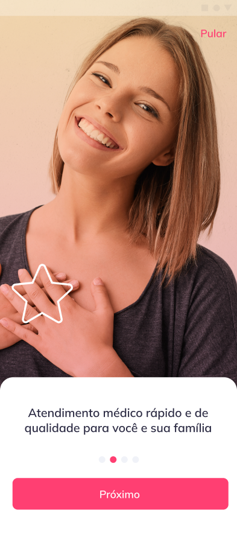
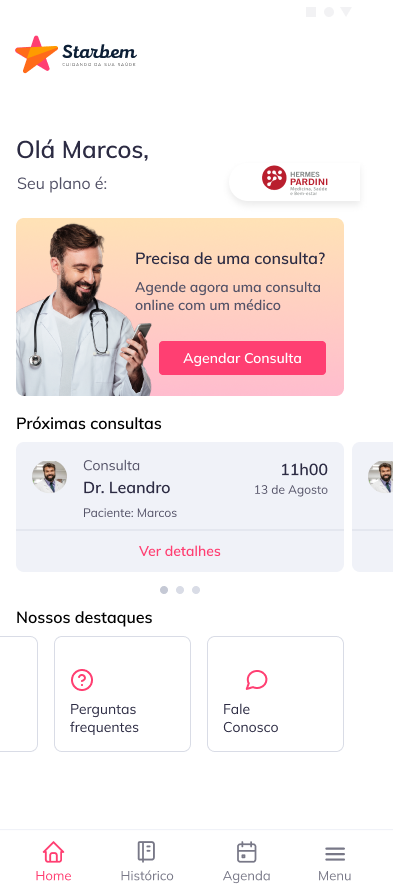
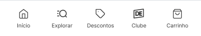
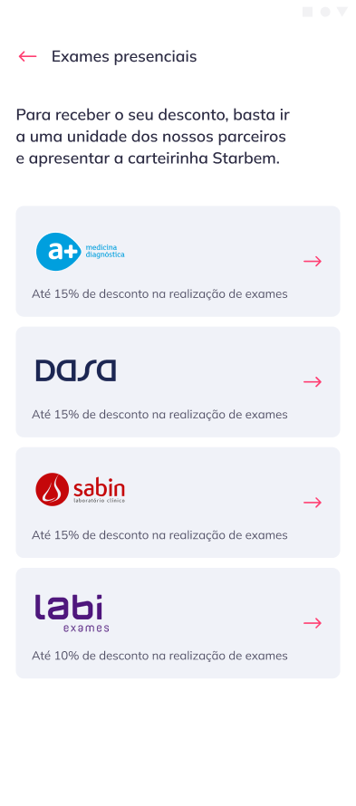

De Resposta à Pandemia a Plataforma Escalável de Saúde Digital

Starbem é uma healthtech brasileira focada em oferecer serviços de saúde digital acessíveis. A plataforma conecta pacientes a profissionais de saúde — incluindo médicos, psicólogos, psiquiatras e nutricionistas — com forte ênfase em soluções de saúde mental para empresas (B2B).
Contexto
Durante a pandemia de COVID-19, o acesso à saúde tornou-se limitado e sobrecarregado. As pessoas enfrentavam incerteza sobre sintomas, quando buscar atendimento de emergência e como ter acesso médico com segurança.
Nesse cenário, identificamos uma oportunidade de alavancar a telemedicina para oferecer assistência médica rápida, confiável e escalável — reduzindo o impacto da sobrecarga nos sistemas de saúde e guiando pacientes com clareza.
Com o crescimento da demanda e a validação do modelo, o MVP evoluiu para o Starbem, uma plataforma robusta de saúde digital que se tornou referência em saúde corporativa no Brasil.
O principal desafio foi projetar e lançar uma solução que diagnosticasse, triasse e orientasse pacientes com rapidez.
A pesquisa revelou barreiras críticas de acesso e comunicação que precisavam ser resolvidas em tempo real:
- Falta de orientação clara para pacientes com sintomas de COVID-19
- Sistemas de saúde sobrecarregados e inacessíveis
- Baixa acessibilidade a suporte médico imediato
O desafio era garantir confiança, usabilidade e escalabilidade em um ambiente de alta incerteza, validando rapidamente sem abrir mão da qualidade da experiência.
O projeto seguiu um ciclo acelerado de descoberta, validação e entrega, adaptado à velocidade exigida pelo contexto pandêmico.
Pesquisa
Pesquisa inicial com usuários afetados para entender comportamentos, medos e necessidades em contexto de crise.
Jornadas
Definição das principais jornadas de usuário focadas em triagem de sintomas e tomada de decisão.
Alinhamento
Facilitação de sessões de alinhamento com stakeholders e parceiros, definindo escopo e critérios de sucesso.
Prototipagem
Ciclos rápidos de prototipagem para validar hipóteses. Testes de usabilidade para refinar fluxos e reduzir fricção.
Entrega
Colaboração estreita com times multifuncionais para iteração rápida, lançamento do MVP e evolução contínua do produto.
Triagem de Sintomas

Consulta Online


Dashboard de Saúde

Benefícios B2B
Atuei de forma estratégica ao longo de todo o ciclo de vida do produto — da descoberta à entrega — liderando um time multidisciplinar e traduzindo dores complexas dos usuários em oportunidades concretas de produto.
Identifiquei que mais de 60% dos pacientes não sabiam quando buscar atendimento de emergência, o que gerava tanto sobrecarga nos pronto-socorros quanto subnotificação de casos graves. O problema central não era apenas clínico: era de comunicação, confiança e acesso.
Para resolver isso, propus a criação de um MVP de telemedicina centrado em três pilares de experiência:
- clareza no diagnóstico inicial de sintomas,
- conexão imediata com médicos voluntários,
- orientação confiável entre recuperação em casa e encaminhamento emergencial.
Além disso, identifiquei lacunas na jornada de onboarding e na comunicação de valor da plataforma — especialmente no mercado B2B. Reestruturei o fluxo para garantir que empresas compreendessem rapidamente o impacto do produto na saúde dos seus colaboradores.
Alinhei stakeholders em torno de uma visão clara de produto, conduzi ciclos rápidos de validação para reduzir riscos e construí a fundação que permitiu ao produto evoluir de um MVP emergencial para um negócio escalável de saúde digital.
Como resultado, essa abordagem transformou uma resposta de crise em uma solução de longo prazo — conectando experiência do usuário com crescimento de receita, expansão B2B e atração de investimento.
O projeto evoluiu de um MVP pandêmico para uma plataforma digital de saúde com escala nacional, demonstrando o poder de combinar design centrado no usuário com estratégia de negócio orientada a dados.
230K
usuários ativos no Brasil, consolidando a plataforma como referência em saúde digital acessível
93%
taxa de satisfação dos usuários, com crescimento de receita de R$78K no Q1 2022 para mais de R$1M no Q1 2023
R$3M
captados de investidores-anjo (2021–2022) e participação no Toronto Accelerator Program (2023), com 96 clientes B2B